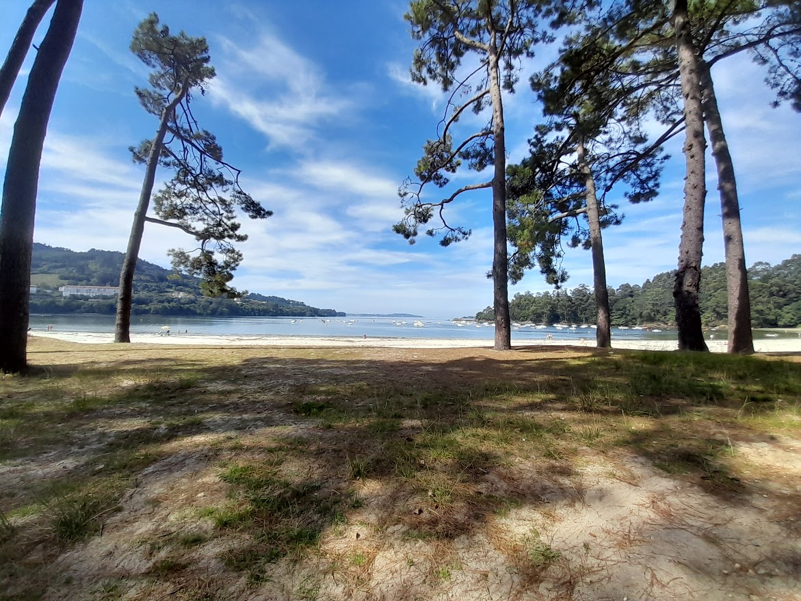
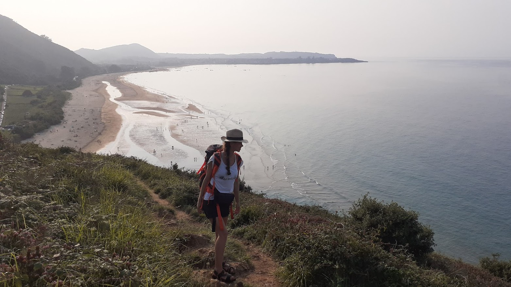
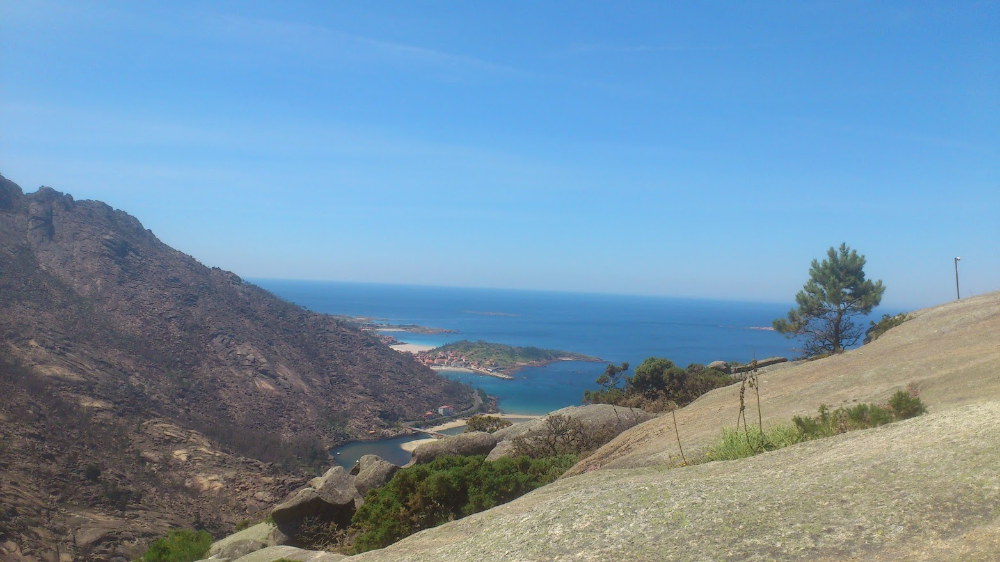
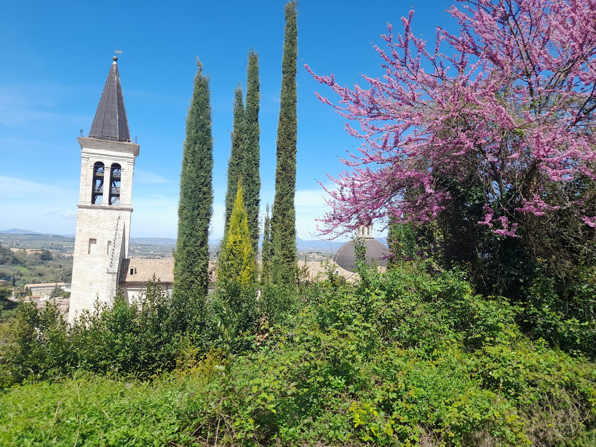
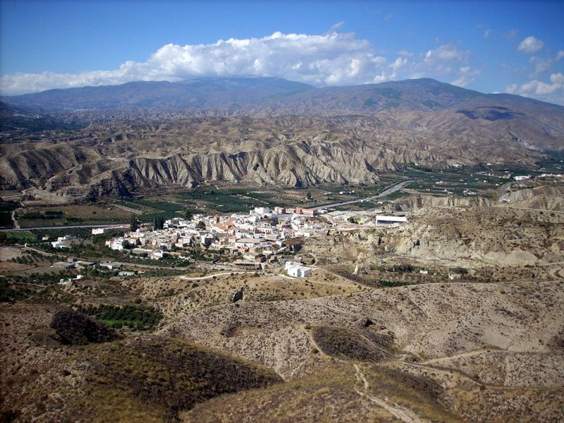
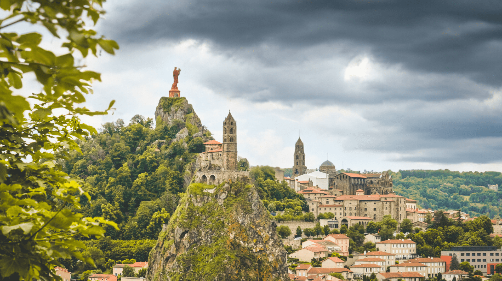
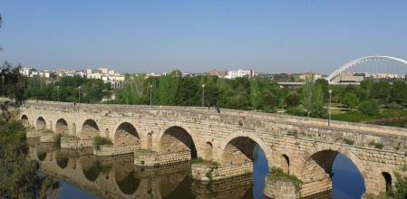

+34 634 75 04 00
+34 634 75 04 00
Hablamos tu idioma: Wir sprechen deutsch 🇩🇪/ on parle français 🇫🇷/ hablamos español 🇪🇸/ we speak english 🇺🇲/ parliamo italiano 🇮🇹 e otros idiomas!
Estamos aún trabajando en nuestra página web
Nuestra futura dirección: micamitravels.com
Nuestra filosofía
MICAMI es un agente de viajes independiente especializado en el Camino de Santiago en España, Portugal y Francia y otros Caminos y rutas a pie. Descubre nuestras rutas.
En MICAMI trabajamos con los peregrinos directamente, sin intermediarios ni comisiones sobrepuestas, ofreciendo así calidad, cercanía humana y apoyo inmediato, desde logístico hasta (a veces) psicológico.
Apostamos por los viajes “slow”, colaborando directamente con alojamientos, transportistas y restaurantes locales. Muchos de ellos son negocios pequeños, familiares y cercanos. Nos cuidamos mutuamente para dar calidad y calidez.
Nuestro peregrino es nuestro futuro amigo al que queremos ofrecer la mejor experiencia en su camino, pero sin quitarle el protagonismo. Al final, cada uno tiene que trazar su camino.
No tengas miedo a emprender esta aventura: En MICAMI vamos a ser “tu ángel del camino” que aparece cuando uno lo necesita.

En MICAMI
Estaríamos felices en acompañarte en esta aventura, resolviendo paso a paso tus dudas y miedos y al final compartir contigo la alegría de llegar al punto final.
Te ayudamos a diseñar la ruta, etapas adecuadas a tu idea y forma física, días de pausa para descansar o aprovechar la oferta cultural al máximo.
Reservar alojamientos, comidas, transfer dentro del destino (no reservamos los vuelos), transporte del equipaje.
Estaremos a tu lado a través del teléfono durante tu camino, te responderemos y guiaremos para que tu aventura sea una BUENA experiencia.


¿Y por qué MICAMI?
Somos peregrinos, estamos en la piel del caminante cogiendo la mochila y recorriendo los caminos antiguos y los nuevos CADA AÑO.
Llevamos más de 10 años trabajando en los caminos realizando las reservas, como guías, dando apoyo logístico y psicológico a nuestros peregrinos y caminantes.
Muchos peregrinos y caminantes acompañados en España, Portugal, Francia e Italia.
Hablamos tu idioma: Wir sprechen Deutsch, On parle français, Hablamos español, We speak English, Parliamo italiano ¡y otros idiomas!
¿Que Caminos ofrecemos? Empieza a soñar
-

-

-

-

-

-

-

-

-

Quien soy
Querido peregrino y caminante. Me llamo Olesia, o simplemente Oli, como me conocen en los Caminos.
Me gustaría contarte mi historia: Te tengo que ser sincera: el Camino no fue amor a la primera vista. Al principio fue interés, curiosidad, sorpresa y mucho esfuerzo. Fue mi primer Camino. Entonces fui peregrina, luego guía, más tarde responsable de reservas en una agencia, persona de contacto para peregrinos y caminantes, la exploradora de nuevos caminos. De esta forma en más de 10 años acompañé directa- e indirectamente a más de 1000 personas, apoyándolos en los momentos difíciles y de alegría de sueño cumplido.
Hoy en día el Camino de Santiago es un destino turístico bastante explotado, pero no tengas miedo: sigue teniendo su magia de poder acoger a todos, según los gustos , necesidades y capacidades.
Lo revivo en persona cada año: cogiéndo mi mochila y caminando paso a paso hacia lo básico, lo esencial: amabilidad, compañerismo, apreciar la belleza de la naturaleza y architectura millenaria, satisfaccion trás superar a sí mismo, agradecimiento por pequeños gestos. Así quedo conectada con mi corazón con el Camino, con aquel viaje a pié que que hice hace muchos años.
En MICAMI no corro trás la cantidad de clientes-peregrinos (aunque a la gente les gusten los números), prefiero poder acompañar a pocos, pero darles la calidad y cercanía,satisfación y ganas de descubrir más: en lo extrerior e interior. Me encantaría poder acompañarte en Tu camino.